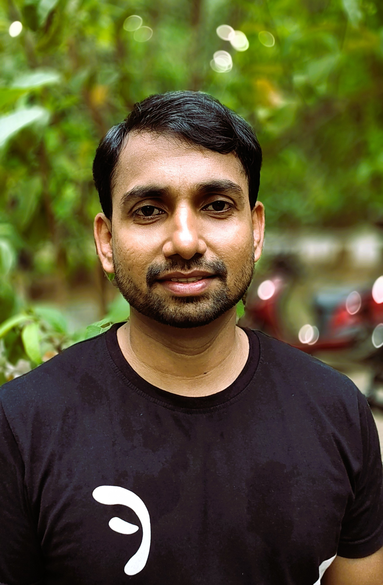

Dr. Vamsinadh Thota is an Assistant Professor in the Department of Mathematics at the National Institute of Technology, Tiruchirappalli (NITT).
He received his Doctor of Philosophy (Ph.D.) in Mathematics from the Department of Mathematics and Statistics, Indian Institute of Technology Kanpur, during 2012–2017, under the supervision of Prof. P. Shunmugaraj. His doctoral dissertation was titled "Some Geometric and Approximation Theoretic Properties in Banach Spaces". He earned his Master of Science (M.Sc.) in Applied Mathematics from the Indian Institute of Technology Roorkee in 2012 and his Bachelor of Science (B.Sc.) in Mathematics from Acharya Nagarjuna University in 2009.
His research interests lie in Functional Analysis, with a primary focus on the Geometry of Banach Spaces and Approximation Theory in Banach Spaces. His research includes geometric and structural properties of Banach spaces, best approximation, simultaneous approximation, norm-attaining operators, orthogonality in Banach spaces, smoothness and convexity properties of normed spaces, non-expansive mappings, and fixed point theory.
Functional Analysis, Banach space geometry, approximation theory, best approximation, simultaneous approximation, norm-attaining operators, orthogonality in Banach spaces, smoothness and convexity, non-expansive mappings, and fixed point theory.
Thesis Title: Some Geometric, Best Approximation and Extension Properties in Banach Spaces
Duration: July 2019 – January 2024
Status: Awarded on 21 June 2024
Thesis Title: On Some Rotundity Properties of Banach Spaces in terms of Remotality, UC′ and UC-Type Properties
Duration: October 2020 – March 2026
Status: Awarded on 06 July 2026
Joint Supervisor: Dr. Jitraj Saha
Thesis Title: Steady-State Solutions to Nonlinear Particulate Models
Duration: April 2021 – February 2026
Status: Awarded on 10 April 2026
Joint Supervisor: Dr. Jitraj Saha
Thesis Title: Solution Methodologies for Multivariate Nonlinear Particulate Models
Duration: February 2022 – February 2026
Status: Awarded on 24 March 2026
Thesis Title: To be finalized
Duration: August 2022 – Present
Current Status: First Seminar Talk (FST)
Joint Supervisor: Dr. Jitraj Saha
Thesis Title: To be finalized
Duration: August 2023 – Present
Current Status: First Seminar Talk (FST)
Dissertation Title: Some Fixed-Point Theorems and Their Applications
Duration: January – May 2021
Status: Completed
Dissertation Title: Korovkin-Type Approximation of Functions
Duration: January – May 2022
Status: Completed
Dissertation Title: Various Methods in Summability Theory
Duration: January – May 2022
Status: Completed
Dissertation Title: Generalization of Fixed-Point Theorem and Its Applications in Graph Theory
Duration: January – May 2023
Status: Completed
Dissertation Title: Orthogonality in Normed Linear Spaces
Duration: January – May 2023
Status: Completed
Dissertation Title: Norm Attaining Operators in Banach Spaces
Duration: January – May 2024
Status: Completed
Dissertation Title: Fixed Point Theorems and Their Applications
Duration: January – May 2025
Status: Completed
Dissertation Title: A Study of Non-Expansive Mappings
Duration: July 2025 – May 2026
Status: Ongoing
He served as a reviewer for the following international peer-reviewed journals:
Role: Organizer
Host Institution: National Institute of Technology Tiruchirappalli
Duration: 02–06 August 2021
Role: Organizer
Host Institution: National Institute of Technology Tiruchirappalli
Duration: 05–09 April 2021
Role: Participant
Host Institution: National Institute of Technical Teachers' Training and Research (NITTTR), Chennai (conducted at NIT Tiruchirappalli)
Duration: 11–15 May 2020
Role: Participant
Host Institution: Indian Institute of Technology Hyderabad
Duration: 01–02 December 2019
Role: Participant
Host Institution: Indian Institute of Technology Hyderabad
Duration: 25–29 November 2019
Role: Participant
Host Institution: National Institute of Technology Tiruchirappalli
Duration: 15–19 May 2019
Role: Participant
Host Institution: Teaching Learning Centre, Indian Institute of Technology Madras (conducted at NIT Tiruchirappalli)
Duration: 21–23 June 2018
Role: Participant
Host Institution: Indian Statistical Institute, Bengaluru
Duration: 22–24 September 2016
Role: Participant
Host Institution: Indian Institute of Technology Kanpur
Duration: 26–29 March 2015
Role: Participant
Host Institution: Indian Statistical Institute, Bengaluru
Duration: May–July 2011
Event: National Workshop on Functional Analysis and Operator Algebras
Host Institution: National Institute of Technology Karnataka, Surathkal
Date: 01–05 June 2026
Event: National Workshop on Functional Analysis and its Applications
Host Institution: Indian Institute of Information Technology, Allahabad
Date: 14–16 January 2022
Event: National Workshop on Geometry of Banach Spaces and its Applications
Host Institution: Indian Institute of Information Technology, Allahabad
Date: 31 December 2021 – 02 January 2022
Event: Faculty Development Programme on Research Advances in Mathematics and its Applications
Host Institution: Sathyabama Institute of Science and Technology, Chennai
Date: 02–04 August 2021
Event: National Workshop on Algebra, Analysis and Differential Equations
Host Institution: National Institute of Technology Tiruchirappalli
Date: 14–18 June 2021
Event: International Conference on Algebra, Analysis and Their Applications
Host Institution: Madurai Kamaraj University, Madurai
Date: 09–12 January 2020
Event: Faculty Development Programme on Mathematics for Engineers
Host Institution: Alagappa Chettiar Government College of Engineering & Technology, Karaikudi
Date: 23 December 2018
Dr. Vamsinadh Thota
Assistant Professor, Department of Mathematics
National Institute of Technology Tiruchirappalli
Room #215, Lyceum Building, Tiruchirappalli – 620015
Tamil Nadu, India
Email: vamsinadh@nitt.edu, vamsinadht@gmail.com
Phone: Office: +91 431 250 3666, Mobile: +91 8173980996
Last updated: 11 July 2026